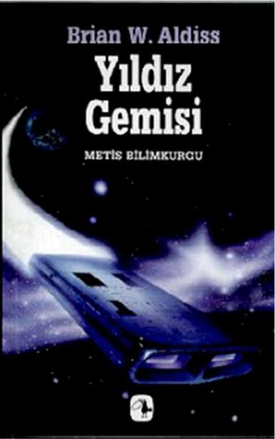

Brian W. Aldiss _ Yıldız Gemisi
Metis Bilimkurgu
Eric Frank Russell /...Ve Sonra Hiç Kalmadı
Ursula K. LeGuin / Balıkçıl Gözü
Robert Sheckley / Mevki Uygarlığı
Robert A. Heinlein / İkiz Yıldız
Harry Harrison / Paslanmaz Çelik Sıçan
Ursula K. LeGuin / Rocannon'un Dünyası
Robert A. Heinlein / Kaybolan Miras
Poul Anderson / İki Dünya Savaşıyor
Pohl & CM. Kornbluth / Uzay Tacirleri
Müfit Özdeş / Son Tiryaki
Robert A. Heinlein / Kızıl Gezegen
Harry Harrison / Yer Açın! Yer Açın!
Ursula K. LeGuin / Dünyaya Orman Denir
Alexei Panshin / Ergenlik Ayini
Harry Harrison / Paslanmaz Çelik Sıçanın İntikamı
Kurt Vonnegut Jr. / Otomatik Piyano
Philip K. Dick / Gökteki Göz
Jack Vance / En Son Kale
Ursula K. LeGuin / Mülksüzler
F. Pohl & CM. Kornbluth / Hukuk Gladyatörü
Robert A. Heinlein / Uzay Elbisemle Yolculuğa Hazırım
Philip K. Dick / Vulcan'ın Çekici
David Brin / Postacı
CM. Kornbluth / Teşkilat
Frederik Pohl / Pısırıklar Çağı
Thomas M. Disch / Kobaylar Kampı
John Brunner / Şok Dalgası Süvarisi
Brian Aldiss / Yıldız Gemisi
Philip K. Dick / Yüksek Şatodaki Adam
Roger Zelazny / Bu Ölümsüz
" İyi Bilimkurgu
İyi Edebiyattır"
Metis Yayınları
İpek Sokak No. 9, 80060 Beyoğlu, İstanbul
Bilimkurgu: 28
Metis Edebiyat Dizisi
Yıldız Gemisi
Brian W. Aldiss
Özgün adı: Starship, 1958
© Bu çevirinin bütün yayın hakları
Metis Yayınları'na aittir, 1998
Birinci Basım: Mart 1999
Yayın Yönetmeni: Bülent Somay
Kapak Tasarımı: Semih Sökmen
Kapak Resmi: Tim White, Ship, 1973
(detay ve kolaj)
Dizgi: Metis Yayıncılık Ltd.
Kapak ve İç Baskı: Yaylacık Matbaası
Cilt: Sistem Mücellithanesi
ISBN 975-342-241-5
Brian W. Aldiss
Yıldız Gemisi
Çeviren: Sönmez Güven
METİS YAYINLARI
BRIAN W. ALDISS
1925'te İngiltere'de doğdu. İlk romanı Yıldız Gemisi'ni (Starship, ya da ilk adıyla Non-Stop) 1958'de yazdı. Çağdaşı ve yakın dostu J. G. Ballard ile birlikte, Amerikan bilimkurgu tarihindeki "yeni kuşak" hareketine İngiltere'den katılmış ve bu akıma damgasını vuran isimlerden biri olmuştur. The Dark Light Years (1964; Karanlık Işık Yılları), Greybeard (Kırsakal; 1964), Barefoot in the Head (1969; Kafaüstü Yalınayak) ve Frankenstein Unbound (1973; Zincirleri Çözülmüş Frankenstein) bu dönemdeki önemli yapıtları arasındadır. The Malada Tapestry ile sürrealist fantazi alanında da ürün veren Aldiss, 1980'lerde yazdığı Helliconia üçlemesiyle bilimkurgunun "klasik" yazarları arasına katıldı.
Bildiklerini değil, hissettiklerini konu olarak seçmek, bir romancı için en güvenli yoldur.
-L. P. HARTLEY
Umutla yolculuk ediyor olmak, menzile ulaşmaktan iyidir...
-R. L. STEVENSON
EVRENİN ne denli önemsiz bir zerresini işgal etmekte olduğunu idrak edemeyen ya da etmek istemeyen bir toplum gerçekten uygarlaşmış sayılmaz. Yani, bünyesinde, onu Anlatılan, böyle bir toplumun öyküsüdür. dengesinden bir ölçüde saptıran ölümcül bir bileşeni de içermektedir. İnsanoğlunun ürettiği fikirler, evrenimizi oluşturan çok çeşidi etkenlerin aksine, her zaman mükemmel bir dengeye sahip olmazlar. Kaçınılmaz olarak, insan zaaflarının izlerini taşırlar; çok yetersiz kalma ile pek görkemli olma arasında gidip gelirler. Anlatılan, görkemli bir düşüncenin öyküsüdür. Bu, kavim için basit bir fikirden daha öteydi: Varoluşun doğrudan doğruya kendisi haline gelmişti. Çünkü bu fikir de, diğer tüm fikirler gibi, çizgisinden sapmış ve bunu yaparken onların gerçek yaşantılarını da beraberinde sürüklemişti.